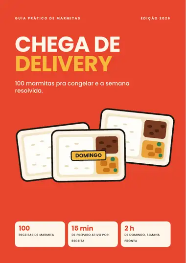
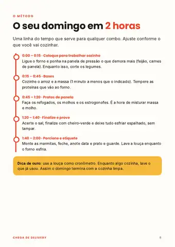
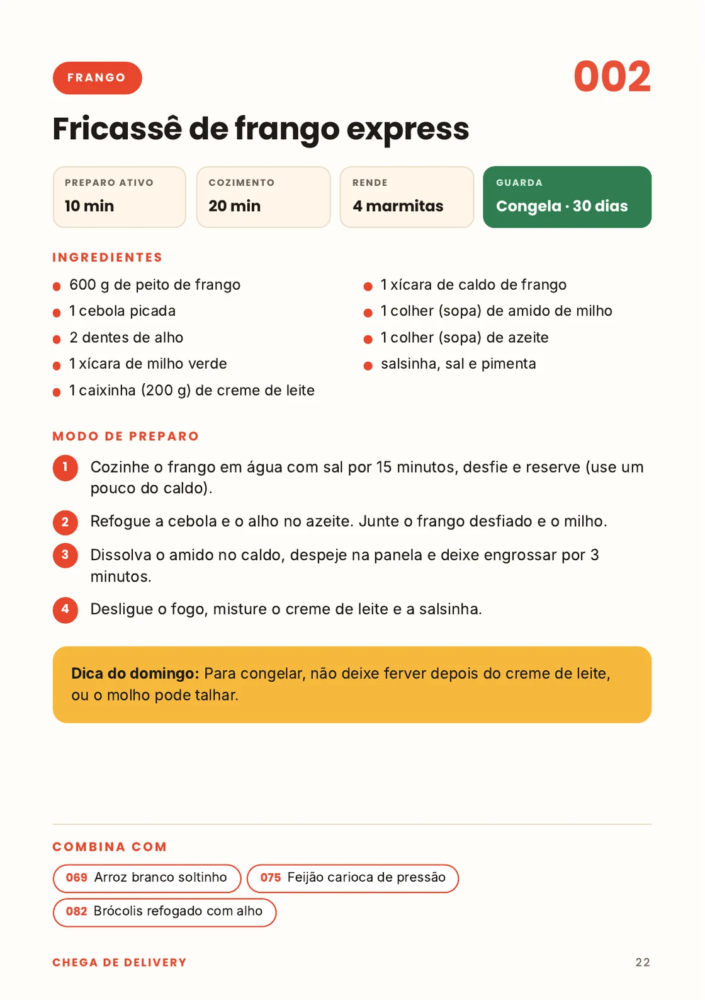
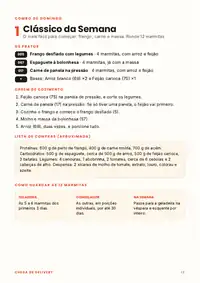
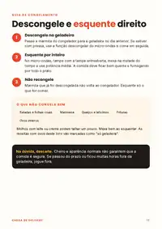
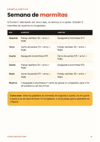
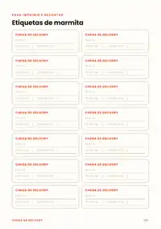

Chega de delivery: 100 marmitas pra congelar e a semana resolvida
Cozinhe uma vez no domingo, congele e tenha almoço e jantar prontos a semana toda. Cada receita leva no máximo 15 minutos de preparo ativo.

2026
Todo dia a mesma pergunta: “o que eu como hoje?”
Quando a resposta é “peço alguma coisa”, o gasto vai somando em silêncio, no fim do mês.
- Chega do trabalho ou da faculdade cansado e sem vontade de cozinhar.
- Abre o app “só dessa vez” e isso vira o hábito da semana.
- Já tentou fazer marmita, mas enjoou do mesmo prato ou a comida estragou.
- Acha que cozinhar toma tempo demais e que precisa saber cozinhar bem.
A saída não é cozinhar todo dia. É cozinhar uma vez, do jeito certo, e deixar o freezer trabalhar por você.
Domingo de Marmita: 3 passos
Escolha um combo
5 combos já montados, com lista de compras e ordem de cozimento. É só escolher e ir ao mercado.
Cozinhe em cerca de 2 horas
Uma linha do tempo diz o que fazer a cada minuto, pra tudo ficar pronto junto.
Porcione, etiquete e congele
Com o guia de congelamento e as etiquetas, você sabe o que guardar, por quanto tempo e como esquentar.

Pensado pra rotina corrida
Receitas simples, de ingredientes de mercado, sem equipamento difícil. O que leva tempo é o forno ou a panela de pressão trabalhando sozinhos, e você aproveita pra lavar a louça ou descansar.
Tudo pra sair do zero e ter a semana pronta

100 receitas completas
Frango, carne, suína, peixes, ovos e vegetarianas, massas, arroz e feijão, legumes, molhos-base e lanches. Cada uma com ingredientes, passo a passo, tempo e quanto tempo guarda.

5 combos de domingo
Clássico, econômico, na panela de pressão, sem carne e mais. Cada um rende 12 marmitas, com lista de compras aproximada.

Guia de congelamento
Como esfriar, porcionar, guardar e descongelar com segurança, e o que não vale a pena congelar.

Exemplo de semana pronta
Um calendário de almoço e jantar de segunda a sexta, já distribuído pra você copiar.

Etiquetas e checklist
Etiquetas pra imprimir e recortar (prato, data e validade) e o checklist do domingo.
Bases e combinações
Cada receita sugere com o que combina: arroz, feijão, purê, legumes. Dá pra misturar e não enjoar.
* Preparo ativo é o tempo com a mão na massa. O tempo de forno ou de panela aparece separado em cada receita.
Receita clara, do jeito que dá pra seguir com a panela quente
- Preparo ativo, tempo de cozimento e rendimento no topo.
- Selo de quanto tempo cada marmita guarda no congelador.
- Ingredientes do mercado, em medidas de casa (xícara e colher).
- Passo a passo curto, numerado, sem enrolação.
- “Combina com” pra você montar o prato inteiro.
Seu guia, na hora, no celular
- 100 receitas de marmita, com passo a passo
- 5 combos de domingo com lista de compras
- Guia de congelamento e reaquecimento
- Exemplo de semana pronta e checklist
- Etiquetas pra imprimir
7 dias de garantia. Se não gostar, peça o reembolso por e-mail e devolvemos o valor integral. Como funciona.
O que este guia é, e o que não é
É um livro de receitas e um método de organização pra você cozinhar uma vez e comer bem a semana toda, gastando menos tempo e menos com pedidos.
Não é dieta, não é plano alimentar e não substitui o acompanhamento de nutricionista ou médico. Não prometemos perda de peso nem qualquer resultado de saúde.
Os prazos de conservação do guia são prudentes. Na dúvida sobre uma comida, o guia ensina a regra: descarte.
Perguntas frequentes
Como eu recebo o guia?
Logo depois da confirmação do pagamento, você recebe o acesso ao PDF por e-mail e na tela de compra. Funciona no celular, no computador e dá pra imprimir.
Precisa saber cozinhar?
Não. As receitas são simples, com passos curtos e medidas caseiras. O guia começa pelo método e pelos combos mais fáceis.
Quantas marmitas eu faço por domingo?
Cada receita rende cerca de 4 marmitas, e cada combo de domingo junta pratos pra 12 marmitas. Você ajusta pra sua semana.
Preciso de freezer?
O ideal é ter congelador, porque é ele que deixa as marmitas boas por semanas. Sem freezer, dá pra fazer as que duram na geladeira por 3 a 4 dias. O guia mostra o que vale pra cada caso.
Precisa de panela de pressão?
Ajuda, e algumas receitas usam. Mas há muitas de panela comum, frigideira e forno. Combos “na panela” e econômicos estão no guia.
“15 minutos” é o tempo total?
É o tempo de preparo ativo, com a mão na massa, no máximo por receita. O tempo de panela ou forno vem separado em cada página, pra você planejar o domingo.
É pagamento único?
Sim. Você paga uma vez e o arquivo é seu. Não tem assinatura nem mensalidade.
E se eu não gostar?
Você tem 7 dias pra pedir o reembolso integral, por e-mail, sem precisar explicar.
Domingo que vem, a semana já está no freezer
Comece com um combo, teste uma receita e sinta a diferença na rotina.
Quero meu guia · R$ 9,90